Show supplementary code
%load_ext watermark
import numpy as np
import matplotlib.pyplot as plt
from jax.debug import print as jprintThe watermark extension is already loaded. To reload it, use:
%reload_ext watermarkValerio Bonometti
January 26, 2026
The watermark extension is already loaded. To reload it, use:
%reload_ext watermarkfrom typing import Tuple, Any
from jax.typing import ArrayLike
from jax import random
import jax.numpy as jnp
import seaborn as sns
import matplotlib.pyplot as plt
KEY = random.PRNGKey(666)
def visualize_parameters(parameters: ArrayLike) -> Any:
"""Histogram plot for visualizing parameters"""
fig, ax = plt.subplots(1, 1, figsize=(5, 5))
sns.histplot(
parameters
)
ax.set_xlabel("Parameters Values")
ax.grid(alpha=0.5)
return fig, axdef ones(init_state: Tuple[Tuple[int, ...], Any], random_key: ArrayLike) -> ArrayLike:
"""Initialize with a constant value of one.
Args:
init_state: state variable used for initialisation, a tuple with shape
values is always expected.
random_key: key for pseudo-random number generator.
Returns:
params: values returned as initial values for parameters.
"""
params_shape, _ = init_state
params = jnp.ones(shape=params_shape)
return params
parameters = ones(init_state=((100),None), random_key=KEY)
fig, ax = visualize_parameters(parameters)
ax.set_title("Ones")Text(0.5, 1.0, 'Ones')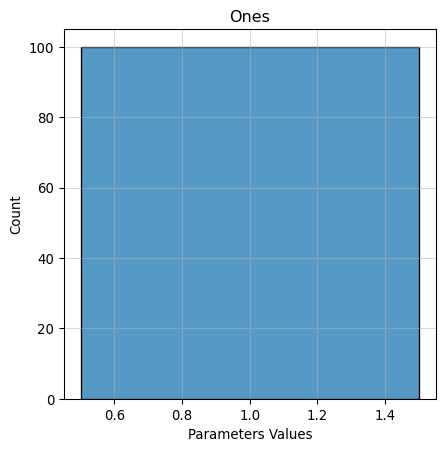
def zeros(init_state: Tuple[Tuple[int, ...], Any], random_key: ArrayLike) -> ArrayLike:
"""Initialize with a constant value of zero.
Args:
init_state: state variable used for initialisation, a tuple with shape
values is always expected.
random_key: key for pseudo-random number generator.
Returns:
params: values returned as initial values for parameters.
"""
params_shape, _ = init_state
params = jnp.zeros(shape=params_shape)
return params
parameters = zeros(init_state=((100),None), random_key=KEY)
fig, ax = visualize_parameters(parameters)
ax.set_title("Zeros")Text(0.5, 1.0, 'Zeros')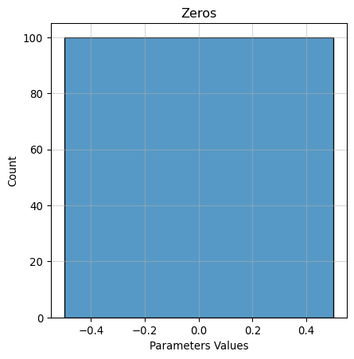
def random_uniform(
init_state: Tuple[Tuple[int, ...], Any],
random_key: ArrayLike,
min_val: float = 0.0,
max_val: float = 1.0,
) -> ArrayLike:
"""Initialize with random values sampled uniformly from min_val and max_val.
Args:
init_state: state variable used for initialisation, a tuple with shape
values is always expected.
random_key: key for pseudo-random number generator.
min_val: lower boundary of the uniform distribution.
max_val: upper boundary of the uniform distribution.
Returns:
params: values returned as initial values for parameters.
"""
params_shape, _ = init_state
params = random.uniform(
key=random_key, shape=params_shape, minval=min_val, maxval=max_val
)
return params
parameters = random_uniform(init_state=((100),None), random_key=KEY,min_val=-1., max_val=3.)
fig, ax = visualize_parameters(parameters)
ax.set_title("Random Uniform")Text(0.5, 1.0, 'Random Uniform')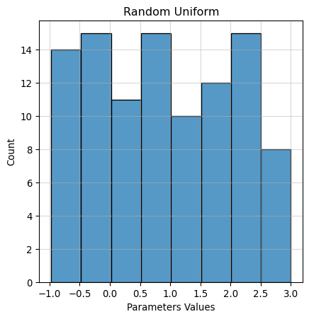
def random_gaussian(
init_state: Tuple[Tuple[int, ...], Any], random_key: ArrayLike, sigma: float = 0.1
) -> ArrayLike:
"""Initialize with random values sampled from a gaussian distribution with mean
zero and standard deviation of sigma.
Args:
init_state: state variable used for initialisation, a tuple with shape
values is always expected.
random_key: key for pseudo-random number generator.
sigma: standard deviation of the gaussian distribution.
Returns:
params: values returned as initial values for parameters.
"""
params_shape, _ = init_state
params = random.normal(key=random_key, shape=params_shape) * sigma
return params
parameters = random_gaussian(init_state=((100),None), random_key=KEY,sigma=1.)
fig, ax = visualize_parameters(parameters)
ax.set_title("Random Gaussian")Text(0.5, 1.0, 'Random Gaussian')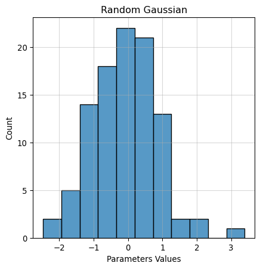
from typing import Callable
from jax import jit
def visualize_link_function(x: ArrayLike, link_function: Callable) -> Any:
fig, ax = plt.subplots(1, 1, figsize=(5, 5))
ax.plot(
x,
link_function(x=x)
)
ax.set_xlabel("Parameter Values")
ax.set_xlabel("Activation Values")
ax.grid(alpha=0.5)
return fig, ax@jit
def linear(x: ArrayLike) -> ArrayLike:
"""Activation function returning the identity of x
Args:
x: input to the activation function
Returns:
x: output of the activation function
"""
return x
x = np.linspace(-1, 1, 100)
fig, ax = visualize_link_function(x=x, link_function=linear)
ax.set_title("Linear Link")Text(0.5, 1.0, 'Linear Link')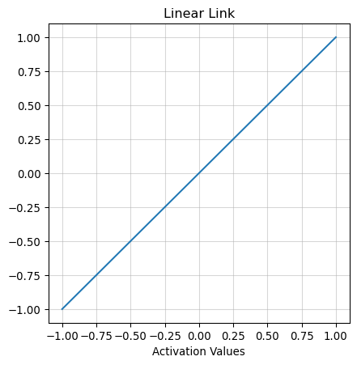
@jit
def sigmoid(x: ArrayLike) -> ArrayLike:
"""Activation function transforming logits into probabilies (range 0, 1)
Args:
x: input to the activation function
Returns:
x: output of the activation function
"""
return 1 / (1 + jnp.exp(-x))
x = np.linspace(-5, 5, 100)
fig, ax = visualize_link_function(x=x, link_function=sigmoid)
ax.set_title("Sigmoid Link")Text(0.5, 1.0, 'Sigmoid Link')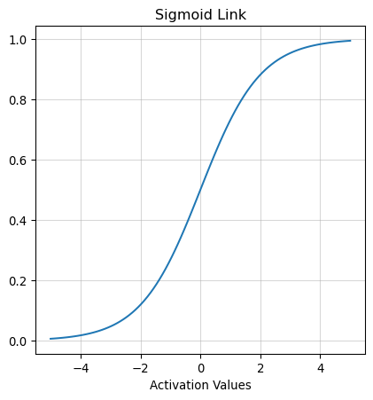
@jit
def tanh(x: ArrayLike) -> ArrayLike:
"""Activation function returning the hyperbolic tangent of x (range -1, 1)
Args:
x: input to the activation function
Returns:
x: output of the activation function
"""
a = jnp.exp(x) - jnp.exp(-x)
b = jnp.exp(x) + jnp.exp(-x)
return a / b
x = np.linspace(-5, 5, 100)
fig, ax = visualize_link_function(x=x, link_function=tanh)
ax.set_title("Tanh Link")Text(0.5, 1.0, 'Tanh Link')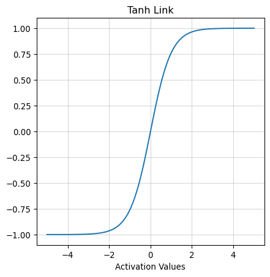
@jit
def softmax(x: ArrayLike) -> ArrayLike:
"""Activation function logits into probabilies (range 0, 1)
Args:
x (array): input to the activation function
Returns:
x: output of the activation function
"""
return jnp.exp(x) / (jnp.sum(jnp.exp(x), axis=1, keepdims=True))
x = np.linspace(1, 5, 10 * 4).reshape((10, 4))
fig, ax = visualize_link_function(x=x, link_function=softmax)
ax.set_title("Softmax Link")Text(0.5, 1.0, 'Softmax Link')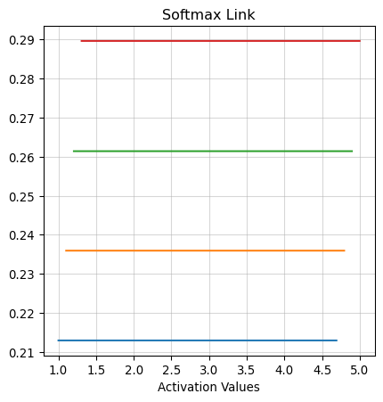
@jit
def relu(x: ArrayLike) -> ArrayLike:
"""Activation function returning the maximum between 0 and x (range 0, inf)
Args:
x: input to the activation function
Returns:
array: output of the activation function
"""
return jnp.maximum(0, x)
x = np.linspace(-1, 1, 100)
fig, ax = visualize_link_function(x=x, link_function=relu)
ax.set_title("ReLU Link")Text(0.5, 1.0, 'ReLU Link')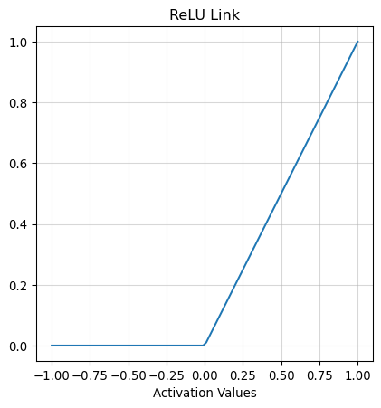
@jit
def leaky_relu(x: ArrayLike, alpha: float=0.1) -> ArrayLike:
"""Activation function returning the maximum between x*alpha and x (range inf, inf)
Args:
x: input to the activation function
alpha: scaler for the the negative part.
Returns:
array: output of the activation function
"""
return jnp.maximum(x * alpha, x)
x = np.linspace(-1, 1, 100)
fig, ax = visualize_link_function(x=x, link_function=leaky_relu)
ax.set_title("Leaky ReLU Link")Text(0.5, 1.0, 'Leaky ReLU Link')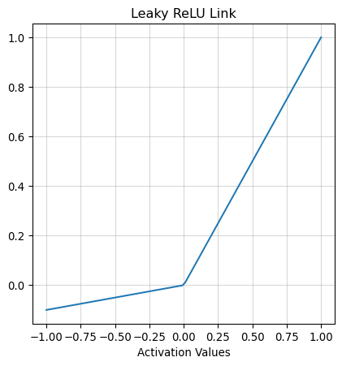
@jit
def elu(x: ArrayLike, alpha: float=1.) -> ArrayLike:
"""Activation function that will return
x if x >= 0
alpha(exp(x) - 1)
Args:
x: input to the activation function
alpha: scaler for the the negative part.
Returns:
array: output of the activation function
"""
return jnp.where(
x >= 0,
x,
alpha * (jnp.exp(x) - 1)
)
x = np.linspace(-5, 1, 100)
fig, ax = visualize_link_function(x=x, link_function=elu)
ax.set_title("Elu Link")Text(0.5, 1.0, 'Elu Link')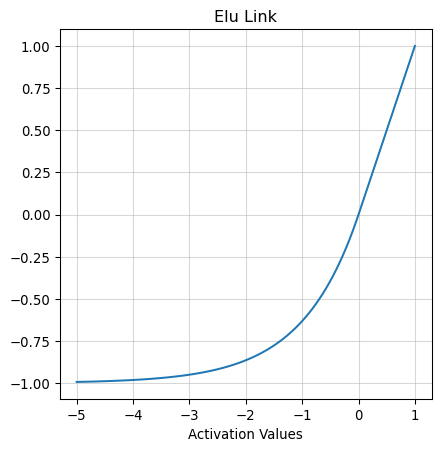
@jit
def swish(x: ArrayLike, alpha: float=1.5) -> ArrayLike:
"""Activation function that will return
x * sigmoid(x * alpha)
Args:
x: input to the activation function
alpha: scaler for the the negative part.
Returns:
array: output of the activation function
"""
return x * sigmoid(x=x*alpha)
x = np.linspace(-10, 10, 100)
fig, ax = visualize_link_function(x=x, link_function=swish)
ax.set_title("Swish Link")Text(0.5, 1.0, 'Swish Link')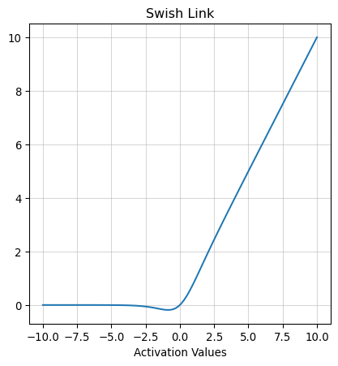
from typing import List
from functools import partial
from tqdm import tqdm
class EarlyStopping:
def __init__(self, tol=10, min_delta=1e-8):
"""Naive implementation of an early stopping callback.
Args:
tol (int, optional): number of iterations without improvement before triggering the stop criteria.
Defaults to 10.
min_delta (_type_, optional): minimum difference in loss used for considering a non-improvement.
Defaults to 1e-8.
"""
self.tol = tol
self.min_delta = min_delta
self.previous_loss = 1e10
self.count = 0
self.stop = False
def evaluate(self, current_loss):
"""_summary_
Args:
current_loss (_type_): _description_
Returns:
_type_: _description_
"""
if (self.previous_loss - current_loss) <= self.min_delta:
self.count += 1
if self.count >= self.tol:
self.stop = True
self.previous_loss = current_loss
return self.stop
def shuffle_arrays(list_arrays: List[ArrayLike]) -> List[ArrayLike]:
"""_summary_
Args:
list_arrays (_type_): _description_
Returns:
_type_: _description_
"""
random_idx = np.random.choice(
a=np.arange(list_arrays[0].shape[0]),
size=list_arrays[0].shape[0],
replace=False,
)
return list([array[random_idx] for array in list_arrays])
def create_batches(X: ArrayLike, y: ArrayLike, batch_size: int = None) -> Tuple[List[ArrayLike], List[ArrayLike]]:
"""_summary_
Args:
X (ArrayLike): _description_
y (ArrayLike): _description_
batch_size (int, optional): size of the batch of data. Defaults to None.
Returns:
Tuple[List[ArrayLike], List[ArrayLike]]: _description_
"""
if batch_size is None:
return X, y
else:
X, y = shuffle_arrays(array_1=X, array_2=y)
X_batched, y_batched = [], []
n_batches = np.arange(X.shape[0] // batch_size)
for batch in n_batches:
start = batch * batch_size
if batch != n_batches[-1]:
end = start + batch_size
else:
end = None
X_batched.append(X[start:end])
y_batched.append(y[start:end])
return X_batched, y_batched
def fit_step(X: ArrayLike, y: ArrayLike, backward: Callable, current_state: Tuple[Any, ...], update_state: Callable, get_params: Callable, random_state: Any):
"""_summary_
Args:
X (_type_): _description_
y (_type_): _description_
backward (_type_): _description_
current_state (_type_): _description_
update_state (_type_): _description_
get_params (_type_): _description_
random_state (_type_): _description_
Returns:
_type_: _description_
"""
current_params = get_params(state=current_state)
loss, grads = backward(
X=X, y=y, current_params=current_params, random_state=random_state
)
current_state = update_state(grads, current_state)
return loss, current_state, grads
def fit_step_on_batch(
X: ArrayLike, y: ArrayLike, backward: Callable, current_state: Tuple[Any, ...], update_state: Callable, get_params: Callable, random_state: Any
):
"""_summary_
Args:
X (_type_): _description_
y (_type_): _description_
backward (_type_): _description_
current_state (_type_): _description_
update_state (_type_): _description_
get_params (_type_): _description_
random_state (_type_): _description_
Returns:
_type_: _description_
"""
partialized_fit_step = partial(
fit_step,
backward=backward,
update_state=update_state,
get_params=get_params,
random_state=random_state,
)
for X_batch, y_batch in zip(X, y):
loss, current_state, grads = partialized_fit_step(
X=X_batch,
y=y_batch,
current_state=current_state,
)
return loss, current_state, grads
def fit(
X: ArrayLike,
y: ArrayLike,
backward: Callable,
start_params: Any,
optimizer: Callable,
epochs: int,
stopper: EarlyStopping,
verbose: int,
batch_size: int,
random_key: int = 666,
track_grads: bool = False,
validation_size: float = .2
):
"""_summary_
Args:
X (_type_): _description_
y (_type_): _description_
backward (_type_): _description_
start_params (_type_): _description_
optimizer (_type_): _description_
epochs (_type_): _description_
stopper (_type_): _description_
verbose (_type_): _description_
random_key (int, optional): _description_. Defaults to 666.
batch_size (_type_, optional): _description_. Defaults to None.
track_grads (bool, optional): _description_. Defaults to False.
Returns:
_type_: _description_
"""
history = []
grads_history = []
validation_size = int(X.shape[0] * validation_size)
random_state = random.PRNGKey(random_key)
init_state, update_state, get_params = optimizer
current_state = init_state(params=start_params)
pbar = tqdm(range(epochs), desc="Loss")
X_fitting, X_validation = X[:-validation_size, :], X[-validation_size:, :]
y_fitting, y_validation = y[:-validation_size, :], y[-validation_size:, :]
for epoch in pbar:
random_state, _ = random.split(random_state)
X_fitting_batched, y_fitting_batched = create_batches(
X=X_fitting,
y=y_fitting,
batch_size=batch_size,
)
loss, current_state, grads = fit_step_on_batch(
X=X_fitting_batched,
y=y_fitting_batched,
backward=backward,
current_state=current_state,
update_state=update_state,
get_params=get_params,
random_state=random_state,
)
validation_loss, _ = backward(
X=X_validation,
y=y_validation,
current_params=get_params(state=current_state),
random_state=random_state,
)
history.append({"fitting_loss": loss, "validation_loss": validation_loss})
if track_grads:
grads_history.append(grads)
if epoch % verbose == 0:
pbar.set_description(f"Loss {jnp.round(loss, 4)}")
if stopper.evaluate(current_loss=validation_loss):
break
if track_grads:
return get_params(state=current_state), history, grads_history
else:
return get_params(state=current_state), historyfrom jax.tree import leaves
from jax.scipy.stats import norm, bernoulli, poisson
@jit
def l1(params):
"""_summary_
Args:
params (_type_): _description_
Returns:
_type_: _description_
"""
l1_loss = sum([jnp.sum(jnp.abs(leave)) for leave in leaves(params)])
return l1_loss
@jit
def l2(params):
"""_summary_
Args:
params (_type_): _description_
Returns:
_type_: _description_
"""
l2_loss = sum([jnp.sum(jnp.square(leave)) for leave in leaves(params)])
return l2_loss
@jit
def gaussian_nll(y, yhat):
"""_summary_
Args:
y (_type_): _description_
yhat (_type_): _description_
Returns:
_type_: _description_
"""
mu, sigma = yhat
ll = norm.logpdf(y, mu, sigma)
return jnp.sum(1 - ll)
@jit
def bernoulli_nll(y, yhat, eps=1e-10):
"""_summary_
Args:
y (_type_): _description_
yhat (_type_): _description_
eps (_type_, optional): _description_. Defaults to 1e-10.
Returns:
_type_: _description_
"""
p = jnp.clip(yhat, eps, 1 - eps)
ll = bernoulli.logpmf(y, p)
return -jnp.sum(ll)
@jit
def poisson_nll(y, yhat):
"""_summary_
Args:
y (_type_): _description_
yhat (_type_): _description_
Returns:
_type_: _description_
"""
ll = poisson.logpmf(y, yhat)
return -jnp.sum(ll)def bernoulli_linear_model(
weights_init_method,
bias_init_method,
reg_function,
prngkey,
reg_strength=0.1,
):
"""_summary_
Args:
weights_init_method (_type_): _description_
bias_init_method (_type_): _description_
reg_function (_type_): _description_
prngkey (_type_): _description_
reg_strength (float, optional): _description_. Defaults to 0.1.
Returns:
_type_: _description_
"""
@jit
def init_params(X):
"""_summary_
Args:
X (_type_): _description_
Returns:
_type_: _description_
"""
weights_key, bias_key = random.split(prngkey)
params = {
"weights": weights_init_method(
init_state=((X.shape[1],), None), random_key=weights_key
),
"bias": bias_init_method(init_state=((1,), None), random_key=bias_key),
}
return params
@jit
def forward(X, current_params, random_state):
"""_summary_
Args:
X (_type_): _description_
current_params (_type_): _description_
random_state (_type_): _description_
Returns:
_type_: _description_
"""
theta = jnp.dot(X, current_params["weights"]) + current_params["bias"]
yhat = sigmoid(theta)
return yhat
@jit
def backward(X, y, current_params, random_state):
"""_summary_
Args:
X (_type_): _description_
y (_type_): _description_
current_params (_type_): _description_
random_state (_type_): _description_
Returns:
_type_: _description_
"""
@jit
def compute_loss(params):
"""_summary_
Args:
params (_type_): _description_
Returns:
_type_: _description_
"""
yhat = forward(X=X, current_params=params, random_state=random_state)
raw_loss = binary_cross_entropy(y=y, yhat=yhat)
reg_loss = reg_function(params=params) * reg_strength
return raw_loss + reg_loss
grad_func = value_and_grad(compute_loss)
loss, grads = grad_func(current_params)
return loss, grads
return init_params, forward, backwardHere you can find the hardware and python requirements used for building this post.
Last updated: 2026-04-01T10:05:51.650090+02:00
Python implementation: CPython
Python version : 3.13.2
IPython version : 9.0.2
Compiler : Clang 18.1.8
OS : Darwin
Release : 25.3.0
Machine : arm64
Processor : arm
CPU cores : 14
Architecture: 64bit